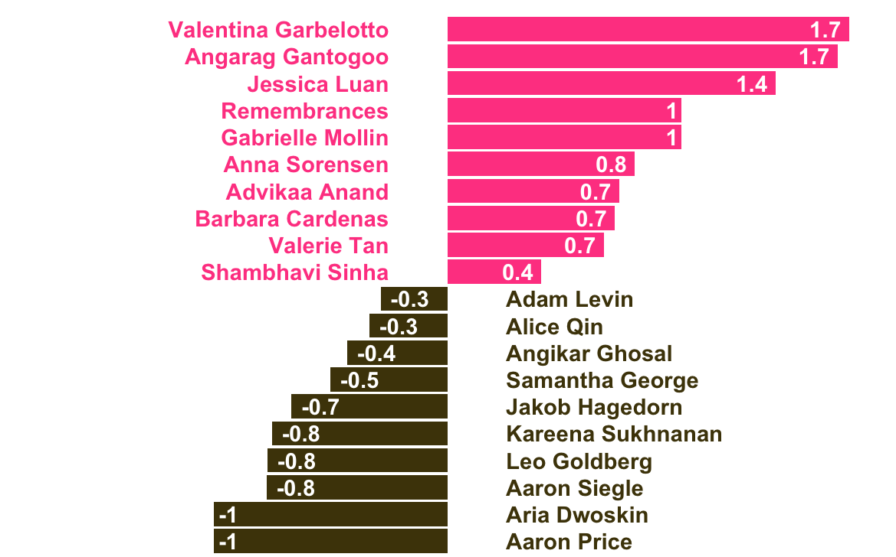
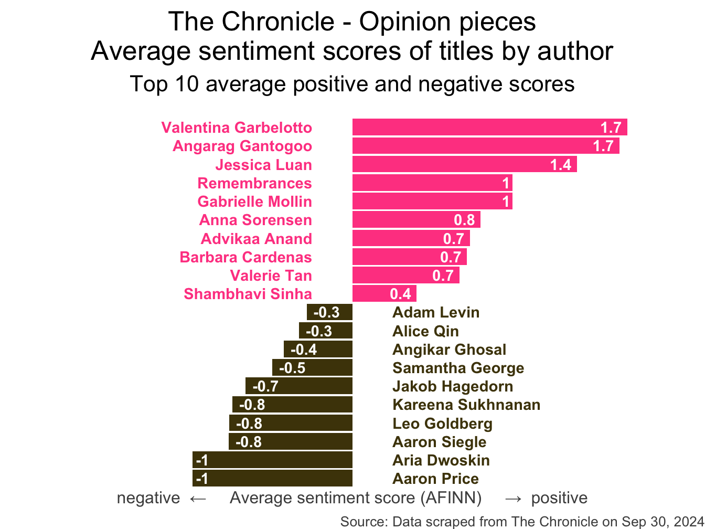

stop_words <- read_csv("data/stop-words.csv")
chronicle |>
tidytext::unnest_tokens(word, title) |>
mutate(word = str_replace_all(word, "’", "'")) |>
anti_join(stop_words) |>
count(word, sort = TRUE) |>
filter(word != "duke's") |>
slice_head(n = 20) |>
mutate(word = fct_reorder(word, n)) |>
ggplot(aes(y = word, x = n, fill = log(n))) +
geom_col(show.legend = FALSE) +
theme_minimal(base_size = 16) +
labs(
x = "Number of mentions",
y = "Word",
title = "The Chronicle - Opinion pieces",
subtitle = "Common words in the 500 most recent opinion piece titles",
caption = "Source: Data scraped from The Chronicle on Oct 6, 2025"
) +
theme(
plot.title.position = "plot",
plot.caption = element_text(color = "gray30")
)Web scraping
a single page
Lecture 12
Dr. Mine Çetinkaya-Rundel
Duke University
STA 199 - Fall 2025
October 7, 2025
Warm-up
While you wait: Participate üì±üíª
Guess: What is this plot about?

Then, make sure you have a Chrome browser and the SelectorGadget extension installed.

Scan the QR code or go to app.wooclap.com/sta199. Log in with your Duke NetID.
Announcements
- Exam 1: Well done!
- In-class exam scores will be posted by Friday morning, you can see your exams in my office hours on Friday
- Take-home exam scores + feedback will be posted after fall break
- New exam grade policy: For students who take all exams (Exam 1, Exam 2, and Final Exam), the final exam score will replace the lower of the two mid-semester exam scores, if the final exam score is higher.
- Midsemester course survey:
- Optional and anonymous, but super helpful!
- Available till Thursday night on Canvas
Project
https://sta199-f25.github.io/project/description.html
-
Take note of the milestones and deadlines
- Milestone 1: If you missed it, check your email for a make-up.
- There will be no make-ups for future milestones
Start thinking about your project idea and potential data sources, Milestone 2 due after Fall break
-
Teamwork:
- Review the expectations and guidelines at the description above
- Take note of peer evaluation due dates (first one due with Milestone 2) and look out for emails from TEAMMATES
- Peer evaluation policy: You cannot receive the points your teammates have allocated to you if you do not fill out the peer evaluation yourself
Data on the web
Participate üì±üíª
How often do you read The Chronicle?
- Every day
- 3-5 times a week
- Once a week
- Rarely
Scan the QR code or go to app.wooclap.com/sta199. Log in with your Duke NetID.
Reading The Chronicle
What do you think is the most common word in the titles of The Chronicle opinion pieces?
Analyzing The Chronicle

Reading The Chronicle
How do you think the sentiments in opinion pieces in The Chronicle compare across authors? Roughly the same? Wildly different? Somewhere in between?
Analyzing The Chronicle
All of this analysis is done in R!
(mostly) with tools you already know!
Common words in The Chronicle titles
Code for the earlier plot:
Avg sentiment scores of titles
Code for the earlier plot:
afinn_sentiments <- read_csv("data/afinn-sentiments.csv")
chronicle |>
tidytext::unnest_tokens(word, title, drop = FALSE) |>
mutate(word = str_replace_all(word, "’", "'")) |>
anti_join(stop_words) |>
left_join(afinn_sentiments) |>
group_by(author, title) |>
summarize(total_sentiment = sum(value, na.rm = TRUE), .groups = "drop") |>
group_by(author) |>
summarize(
n_articles = n(),
avg_sentiment = mean(total_sentiment, na.rm = TRUE),
) |>
filter(n_articles > 2 & !is.na(author)) |>
arrange(desc(avg_sentiment)) |>
slice(c(1:10, 30:39)) |>
mutate(
author = fct_reorder(author, avg_sentiment),
neg_pos = if_else(avg_sentiment < 0, "neg", "pos"),
label_position = if_else(neg_pos == "neg", 0.25, -0.25)
) |>
ggplot(aes(y = author, x = avg_sentiment)) +
geom_col(aes(fill = neg_pos), show.legend = FALSE) +
geom_text(
aes(x = label_position, label = author, color = neg_pos),
hjust = c(rep(1, 10), rep(0, 10)),
show.legend = FALSE,
fontface = "bold"
) +
geom_text(
aes(label = round(avg_sentiment, 1)),
hjust = c(rep(1.25, 10), rep(-0.25, 10)),
color = "white",
fontface = "bold"
) +
scale_fill_manual(values = c("neg" = "#4d4009", "pos" = "#FF4B91")) +
scale_color_manual(values = c("neg" = "#4d4009", "pos" = "#FF4B91")) +
coord_cartesian(xlim = c(-2, 2)) +
labs(
x = "negative ← Average sentiment score (AFINN) → positive",
y = NULL,
title = "The Chronicle - Opinion pieces\nAverage sentiment scores of titles by author",
subtitle = "Top 10 average positive and negative scores",
caption = "Source: Data scraped from The Chronicle on Sep 30, 2024"
) +
theme_void(base_size = 16) +
theme(
plot.title = element_text(hjust = 0.5),
plot.subtitle = element_text(
hjust = 0.5,
margin = unit(c(0.5, 0, 1, 0), "lines")
),
axis.title.x = element_text(color = "gray30", size = 12),
plot.caption = element_text(color = "gray30", size = 10)
)Where is the data coming from?

Where is the data coming from?
# A tibble: 500 × 7
title author date_time month day column url
<chr> <chr> <dttm> <chr> <dbl> <chr> <chr>
1 The United Sta… Noor … 2025-10-07 10:00:00 Oct 7 Opini… http…
2 The problem wi… Harri… 2025-10-07 10:00:00 Oct 7 Campu… http…
3 The 'Duke Diff… Gabri… 2025-10-06 14:30:00 Oct 6 Campu… http…
4 Death ain’t no… Luke … 2025-10-06 10:00:00 Oct 6 Campu… http…
5 Hazing ban for… Monda… 2025-10-06 04:00:00 Oct 6 Campu… http…
6 Duke’s hold on… Lucas… 2025-10-04 10:00:00 Oct 4 Campu… http…
7 The world need… Leo G… 2025-10-03 10:00:00 Oct 3 Campu… http…
8 We’ve grown th… Kayle… 2025-10-02 14:00:00 Oct 2 Opini… http…
9 How Duke intro… Neel … 2025-10-01 10:00:00 Oct 1 Campu… http…
10 Why aren’t we … Ryan … 2025-10-01 10:00:00 Oct 1 Campu… http…
# ℹ 490 more rowsWeb scraping
Scraping the web: what? why?
Increasing amount of data is available on the web
These data are provided in an unstructured format: you can always copy&paste, but it’s time-consuming and prone to errors
Web scraping is the process of extracting this information automatically and transform it into a structured dataset
-
Two different scenarios:
Screen scraping: extract data from source code of website, with html parser (easy) or regular expression matching (less easy).
Web APIs (application programming interface): website offers a set of structured http requests that return JSON or XML files.
Hypertext Markup Language
Most of the data on the web is still largely available as HTML - while it is structured (hierarchical) it often is not available in a form useful for analysis (flat / tidy).
<html>
<head>
<title>This is a title</title>
</head>
<body>
<p align="center">Hello world!</p>
<br/>
<div class="name" id="first">John</div>
<div class="name" id="last">Doe</div>
<div class="contact">
<div class="home">555-555-1234</div>
<div class="home">555-555-2345</div>
<div class="work">555-555-9999</div>
<div class="fax">555-555-8888</div>
</div>
</body>
</html>rvest
- The rvest package makes basic processing and manipulation of HTML data straight forward
- It’s designed to work with pipelines built with
|> - rvest.tidyverse.org

rvest
Core functions:
read_html()- read HTML data from a url or character string.html_elements()- select specified elements from the HTML document using CSS selectors (or xpath).html_element()- select a single element from the HTML document using CSS selectors (or xpath).html_table()- parse an HTML table into a data frame.html_text()/html_text2()- extract tag’s text content.html_name- extract a tag/element’s name(s).html_attrs- extract all attributes.html_attr- extract attribute value(s) by name.
html, rvest, & xml2
html <-
'<html>
<head>
<title>This is a title</title>
</head>
<body>
<p align="center">Hello world!</p>
<br/>
<div class="name" id="first">John</div>
<div class="name" id="last">Doe</div>
<div class="contact">
<div class="home">555-555-1234</div>
<div class="home">555-555-2345</div>
<div class="work">555-555-9999</div>
<div class="fax">555-555-8888</div>
</div>
</body>
</html>'Selecting elements
More selecting tags
{xml_nodeset (7)}
[1] <div class="name" id="first">John</div>
[2] <div class="name" id="last">Doe</div>
[3] <div class="contact">\n <div class="home">555-555-1234</di ...
[4] <div class="home">555-555-1234</div>
[5] <div class="home">555-555-2345</div>
[6] <div class="work">555-555-9999</div>
[7] <div class="fax">555-555-8888</div>CSS selectors
- We will use a tool called SelectorGadget to help us identify the HTML elements of interest by constructing a CSS selector which can be used to subset the HTML document.
- Some examples of basic selector syntax is below,
| Selector | Example | Description |
|---|---|---|
| .class | .title |
Select all elements with class=“title” |
| #id | #name |
Select all elements with id=“name” |
| element | p |
Select all <p> elements |
| element element | div p |
Select all <p> elements inside a <div> element |
| element>element | div > p |
Select all <p> elements with <div> as a parent |
| [attribute] | [class] |
Select all elements with a class attribute |
| [attribute=value] | [class=title] |
Select all elements with class=“title” |
CSS classes and ids
{xml_nodeset (2)}
[1] <div class="name" id="first">John</div>
[2] <div class="name" id="last">Doe</div>Text with html_text() vs. html_text2()
[1] " \n This is the first sentence in the paragraph.\n This is the second sentence that should be on the same line as the first sentence.This third sentence should start on a new line.\n "[1] "This is the first sentence in the paragraph. This is the second sentence that should be on the same line as the first sentence.\nThis third sentence should start on a new line."HTML tables with html_table()
SelectorGadget
SelectorGadget (selectorgadget.com) is a javascript based tool that helps you interactively build an appropriate CSS selector for the content you are interested in.
Application exercise
Opinion articles in The Chronicle
Go to https://www.dukechronicle.com/section/opinion?page=1&per_page=500.
How many articles are on the page?
Goal
- Scrape data and organize it in a tidy format in R
- Perform light text parsing to clean data
- Summarize and visualze the data
ae-09-chronicle-scrape
Go to your ae project in RStudio.
If you haven’t yet done so, make sure all of your changes up to this point are committed and pushed, i.e., there’s nothing left in your Git pane.
If you haven’t yet done so, click Pull to get today’s application exercise file: ae-09-chronicle-scrape.qmd and
chronicle-scrape.R.